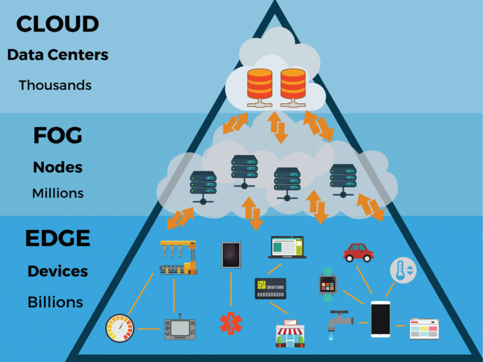

Technology ("science of craft", from Greek τέχνη, techne, "art, skill, cunning of hand") is the sum of techniques, skills, methods, and processes used in the production of goods or services or in the accomplishment of objectives, such as scientific investigation. Technology can be the knowledge of techniques, processes, and the like, or it can be embedded in machines to allow for operation without detailed knowledge of their workings. Systems (e.g. machines) applying technology by taking an input, changing it according to the system's use, and then producing an outcome are referred to as technology systems or technological systems.
The simplest form of technology is the development and use of basic tools.
Technology ("science of craft", from Greek τέχνη, techne, "art, skill, cunning of hand") is the sum of techniques, skills, methods, and processes used in the production of goods or services or in the accomplishment of objectives, such as scientific investigation. Technology can be the knowledge of techniques, processes, and the like, or it can be embedded in machines to allow for operation without detailed knowledge of their workings. Systems (e.g. machines) applying technology by taking an input, changing it according to the system's use, and then producing an outcome are referred to as technology systems or technological systems.
The simplest form of technology is the development and use of basic tools.
Technology is constantly updating at such a rapid pace that it seems it is might be faster than light! A technology or a programming language that is making the rounds this week may be obsolete by the next few days! As more and more funds are invested in research and development, computer scientists and professionals are constantly tweaking and improving existing technologies to get the most out of them. As a result, a new programming language, library, patch, or plug-in gets released almost every hour. To keep up with this crazy pace of development, you have to keep learning the latest technology concepts. We will look at the most trending technologies that you must learn. Learn about the top hottest skills to learn to get a job.
Learning and enhancing your skills are vital in this technological era. This helps you to prepare yourself for getting the highest paying jobs in the field of your choice. And if you are a professional already, learning new technologies and tools will take you an inch closer to the promotion you always dreamt of.
Here are some of the latest trending technologies that are sure to dominate the IT industry in 2021 and the upcoming years
1. Artificial Intelligence
 Artificial intelligence (AI) is the technology used for equipping computer systems with the ability to make decisions like humans. Being one of the trending technologies, when AI programs are fed to systems, the aim is to mimic human intelligence for performing complex tasks such as pattern recognition, speech recognition, weather forecast and medical diagnosis.
AI is used in navigation based applications like Uber, voice assistants like Siri, video streaming services like Netflix, IoT devices and in search engines like Google and Bing. AI helps in automating tasks such as traffic, scheduling trains, making business predictions and designing driverless cars!
By 2030, AI automation is expected to create more than 70 million jobs. The sad fact is that AI might wipe out more than 23 million jobs by the same time frame. AI will create jobs in areas such as testing, support, maintenance, programming and data science. Software developers who know AI earn much more than developers who don’t.
Artificial intelligence (AI) is the technology used for equipping computer systems with the ability to make decisions like humans. Being one of the trending technologies, when AI programs are fed to systems, the aim is to mimic human intelligence for performing complex tasks such as pattern recognition, speech recognition, weather forecast and medical diagnosis.
AI is used in navigation based applications like Uber, voice assistants like Siri, video streaming services like Netflix, IoT devices and in search engines like Google and Bing. AI helps in automating tasks such as traffic, scheduling trains, making business predictions and designing driverless cars!
By 2030, AI automation is expected to create more than 70 million jobs. The sad fact is that AI might wipe out more than 23 million jobs by the same time frame. AI will create jobs in areas such as testing, support, maintenance, programming and data science. Software developers who know AI earn much more than developers who don’t.
So, learning AI will help you secure jobs such as:
Machine Learning Engineer
Data Scientist
Computer Vision Engineer
Business Intelligence Developer
Data Analyst
2. Data Science
 Next up in the list of latest technology concepts is not surprisingly Data Science. Data Science is the technology that helps to make sense of complicated data. You know that data is produced in a humungous amount every day by companies. This includes business data, sales data, customer profile information, server data, and financial figures.
Most of this data is in the form of huge data sets that are unstructured. The role of data scientists is to convert these unstructured data sets into structured datasets. Then, these data sets can be analyzed to identify patterns and trends. These patterns are useful for understanding the company’s business performance, customer retention, and how these areas can be improved.
The average salary of a Data Scientist is $117,345/yr. No wonder the Harvard Business Review called it the “sexiest job of 21st Century”. But getting a job in this field will require you to have a thorough understanding of mathematics, statistics, computer science, and programming. Learn more about data scientists salary in India.
Next up in the list of latest technology concepts is not surprisingly Data Science. Data Science is the technology that helps to make sense of complicated data. You know that data is produced in a humungous amount every day by companies. This includes business data, sales data, customer profile information, server data, and financial figures.
Most of this data is in the form of huge data sets that are unstructured. The role of data scientists is to convert these unstructured data sets into structured datasets. Then, these data sets can be analyzed to identify patterns and trends. These patterns are useful for understanding the company’s business performance, customer retention, and how these areas can be improved.
The average salary of a Data Scientist is $117,345/yr. No wonder the Harvard Business Review called it the “sexiest job of 21st Century”. But getting a job in this field will require you to have a thorough understanding of mathematics, statistics, computer science, and programming. Learn more about data scientists salary in India.
So, learning Data Science will help you secure jobs such as:
Data Scientist
Data Architect
Business Intelligence Manager
Data Engineer
Data Analyst
Business Analyst
3. Internet of Things
 The IoT (Internet of Things) is a network of devices that are connected to each other. Their devices caninteract and share data with each other. These devices may be connected via WiFi, and they share data about their environments and how they are being used. These devices have a computer chip that facilitates this exchange.
It is predicted that more than 41 billion devices powered by IoT will be used by 2025.IoT not only enables the connection between different devices but also their remote access. For example, you lock doors of your car remotely, preheat your ovens and geysers. The FitBit that you use for tracking the number of calories you burn also runs on IoT technology. IoT chips embedded on machines help businesses to assess the performance of those machines and assist in their maintenance. Learn about the real world IoT applications in 2020.
The IoT (Internet of Things) is a network of devices that are connected to each other. Their devices caninteract and share data with each other. These devices may be connected via WiFi, and they share data about their environments and how they are being used. These devices have a computer chip that facilitates this exchange.
It is predicted that more than 41 billion devices powered by IoT will be used by 2025.IoT not only enables the connection between different devices but also their remote access. For example, you lock doors of your car remotely, preheat your ovens and geysers. The FitBit that you use for tracking the number of calories you burn also runs on IoT technology. IoT chips embedded on machines help businesses to assess the performance of those machines and assist in their maintenance. Learn about the real world IoT applications in 2020.
So, Learning this latest technology will help you find jobs such as:
IoT Software Developer
System Design Engineer
IoT Product Manager
IoT Research Developer
IoT Solution Architect
4. Block Chain
 Blockchain is the foundational technology that powers electronic currencies such as Cryptocurrencies. In simple terms, a Blockchain is an electronic ledger that can be shared among different users. This helps in creating a record of transactions that cannot be altered. Each of these records is time-stamped and linked to the previous one.
So every time a new transaction is added to the ledger, it is stored as another block in the chain of transactions – hence the name. Blockchain is updated after the different parties contributing to the ledger agree. After new data is fed into a block, it cannot be erased. This makes technology verifiable and secure.
This validation of transactions helps companies reduce their costs as no third party has to be paid. The system is very secure and there is no need for paying for centralized entities, as the technology is decentralized. Transactions are easier to track using Blockchain.
Blockchain is the foundational technology that powers electronic currencies such as Cryptocurrencies. In simple terms, a Blockchain is an electronic ledger that can be shared among different users. This helps in creating a record of transactions that cannot be altered. Each of these records is time-stamped and linked to the previous one.
So every time a new transaction is added to the ledger, it is stored as another block in the chain of transactions – hence the name. Blockchain is updated after the different parties contributing to the ledger agree. After new data is fed into a block, it cannot be erased. This makes technology verifiable and secure.
This validation of transactions helps companies reduce their costs as no third party has to be paid. The system is very secure and there is no need for paying for centralized entities, as the technology is decentralized. Transactions are easier to track using Blockchain.
So, Learning this latest technology will help you find jobs such as:
Blockchain Developers
System Design Engineer
Blockchain Quality Engineer
Blockchain Legal Consultant or Attorney
Blockchain Engineer
5. Robotic Process Automation (RPA)
 Robotic Process Automation (RPA) is a technology used for automating daily tasks, similar to artificial intelligence. Here, the software is used for automating repetitive tasks such as handling and replying to emails, processing transactions, and handling business data.
This technology is used for automating tasks for low-level employees to higher-ranking officials. RPA can automate more than 40% of daily tasks. According to McKinsey, more than 60% of all repetitive tasks can be partially automated using RPA. So, this technology is going to threaten a lot of jobs.
On the other hand, this latest technology will also create many job opportunities in the automation sector.
The most popular vendors that provide RPA tools are Pega Systems, Blue Prism, UiPath, Automation Anywhere, and WorkFusion. Companies such as Accenture, Deloitte, and Capgemini use RPA tools to automate their daily operations. So, the demand is huge for professionals skilled in RPA.
Robotic Process Automation (RPA) is a technology used for automating daily tasks, similar to artificial intelligence. Here, the software is used for automating repetitive tasks such as handling and replying to emails, processing transactions, and handling business data.
This technology is used for automating tasks for low-level employees to higher-ranking officials. RPA can automate more than 40% of daily tasks. According to McKinsey, more than 60% of all repetitive tasks can be partially automated using RPA. So, this technology is going to threaten a lot of jobs.
On the other hand, this latest technology will also create many job opportunities in the automation sector.
The most popular vendors that provide RPA tools are Pega Systems, Blue Prism, UiPath, Automation Anywhere, and WorkFusion. Companies such as Accenture, Deloitte, and Capgemini use RPA tools to automate their daily operations. So, the demand is huge for professionals skilled in RPA.
So, Learning this latest technology will help you find jobs such as:
RPA Developer
RPA Business Analyst
RPA Consultant
RPA Solution Architect
RPA Project Manager
6. Vitual Reality (RPA)
 VR is the technology by which you can immerse yourself in an environment that seems astonishingly realistic. It is the use of computer technology for creating a simulated environment. It is very popularly used for playing computer games. Unlike traditional games where you experience the gaming environment by viewing it on the screen, you are directly placed in the environment!
Senses such as touch, hearing, smell, and vision are simulated in these environments. Using VR gear such as headsets, you can walk around and play the game in that 3D world. Augmented Reality (AR) is the technology used for improving this virtual environment.
The major players in this field are Facebook’s Oculus Rift, Sony’s PlayStation VR (PSVR), and the HTC Vive.
The VR technology is not only used for entertainment, but it is also used by the U.S. Navy and Coast Guard for training staff. They use a VR game called VirtualShip. AR and VR are used by doctors while performing surgery. Visitors in an amusement park or a museum can also use the technology to enhance their experience.
VR is the technology by which you can immerse yourself in an environment that seems astonishingly realistic. It is the use of computer technology for creating a simulated environment. It is very popularly used for playing computer games. Unlike traditional games where you experience the gaming environment by viewing it on the screen, you are directly placed in the environment!
Senses such as touch, hearing, smell, and vision are simulated in these environments. Using VR gear such as headsets, you can walk around and play the game in that 3D world. Augmented Reality (AR) is the technology used for improving this virtual environment.
The major players in this field are Facebook’s Oculus Rift, Sony’s PlayStation VR (PSVR), and the HTC Vive.
The VR technology is not only used for entertainment, but it is also used by the U.S. Navy and Coast Guard for training staff. They use a VR game called VirtualShip. AR and VR are used by doctors while performing surgery. Visitors in an amusement park or a museum can also use the technology to enhance their experience.
So, Learning this latest technology will help you find jobs such as:
Content Producer
AR and VR Content Writers
Product Management
Software Engineer
UI and UX Design
Quality Assurance
7. Edge Computing
 Edge computing is the latest technology trend that is getting famous by the day. The technology is based on the philosophy of bringing computing power as close to the data source. This helps in reducing bandwidth and latency. The technology aims to run fewer processes in the cloud and shifting those processes to locations such as the user’s system or an edge server. Bridging this gap between the data and the computation reduces the long-distance communication between the server and the client, which in turn enhances the speed of the process. This is why edge computing is used for handling time-sensitive data stored in remote locations that have limited connectivity to the central location. The technology will make cloud computing and IoT devices faster. It is estimated that by 2022, the edge computing market will be worth $7 billion. The technology will be popular in areas such as healthcare, retail, and manufacturing. Thus, it will open the doors to many job opportunities. It is expected that the salary range of an Edge computing professional will be around $100,400 to $123,000 per annum
8. Intelligent Apps
Intelligent apps are software applications that make use of AI components such as machine learning, deep learning, data analytics, robotics, and natural language processing. They help you in making decisions based on real-time data or historical data. Examples of Intelligent apps are voice assistants such as Siri, Google Assistant, and Alexa. As companies such as Google, Apple, and Oracle continue investing in these applications, it is bound to create a lot of jobs in the future. Intelligent applications developers are sure to bring home fat paychecks!